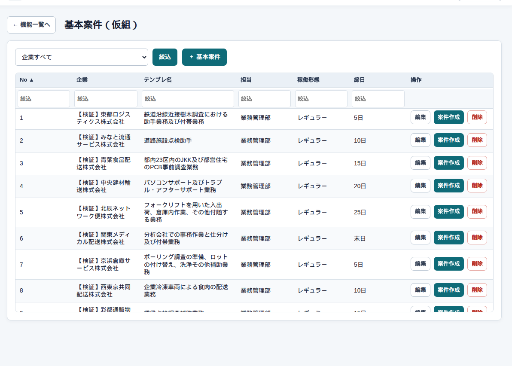
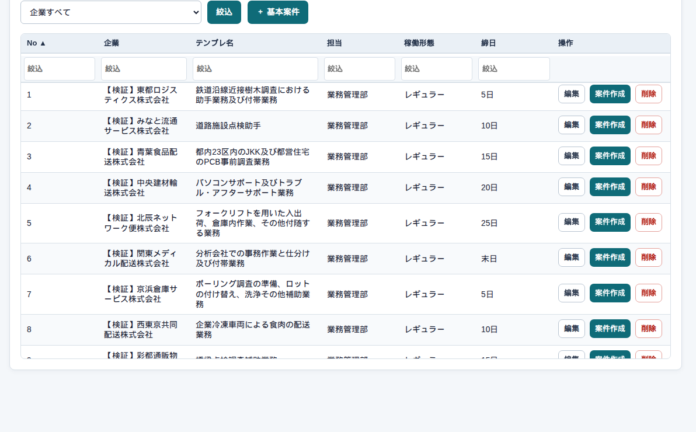

マスタ → 基本案件
基本案件の一覧
まず、この画面
何度も使う仕事のひな形です。まだ日報や請求の対象にはなりません。個別案件を作る元です。管理者・システム担当者・総務・営業が使えます。


詳細と案件作成
「編集」で 基本案件の詳細。「コピー」は中身を複製します。「案件作成」は個別案件側へ進みます。
よくある使い方
同じ仕事を別の人に付ける
ひな形は1つのまま、個別案件を人数分作り、それぞれにパートナーを付けます。
気をつけること
ひな形を直しても、すでに作った個別案件は自動では変わりません。必要な案件は個別側で直すか、コピーして作り直します。